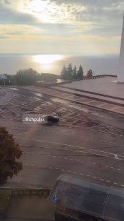
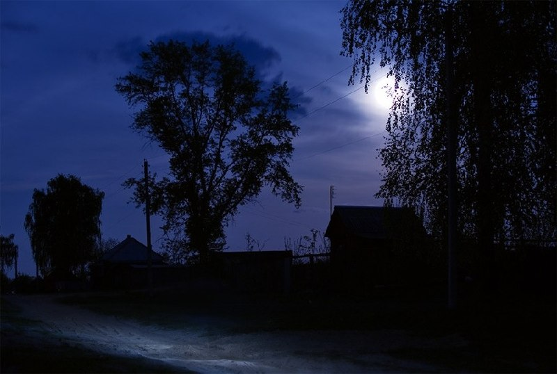
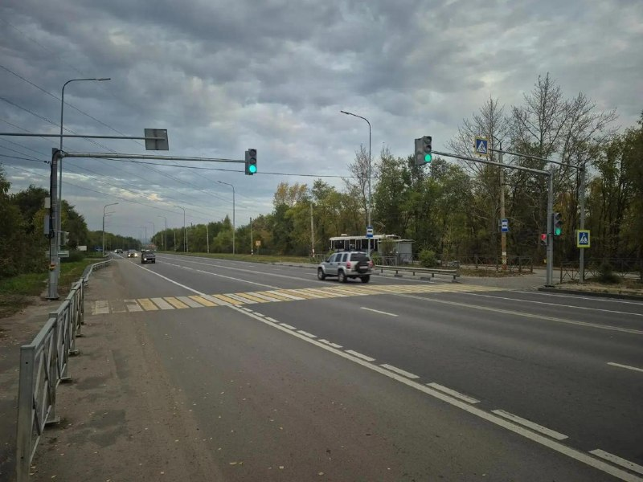

Вас ждёт вечер, где его лучшие шутки встречаются с драйвовой импровизацией от Антона Невского из…
Вас ждёт вечер, где его лучшие шутки встречаются с драйвовой импровизацией от Антона Невского из Ульяновска.…
НовостьПо данным источника
Обязательно наглядные пособия и опыты, например, работа с мини-теплицей. Ранняя профориентация — важная часть подготовки молодых кадров для отрасли. ✅ Работу начали в 2025 году, создав первые шесть агроклассов. В этом году — еще 12.…

Вас ждёт вечер, где его лучшие шутки встречаются с драйвовой импровизацией от Антона Невского из Ульяновска.…

Секция бесплатная, ведётся на базе Экокампуса (Пр-т Нариманова, д.13) Дни и время занятий: пн, ср, пт 15°°-17°° Запись через Госуслуги -> организация…

Госпитализированы сам водитель и четверо пассажиров (22, 15 и 14 лет).…


По словам очевидцев, косолапый некоторое время раскачивал ветки, а затем спокойно спустился на землю и ушёл.…


Конкурс профессионального мастерства собрал 33 начинающих специалиста из школ, детских садов и учреждений дополнительного образования.…

Обязательно наглядные пособия и опыты, например, работа с мини-теплицей. Ранняя профориентация — важная часть подготовки молодых кадров для отрасли.…

В ближайший час и вечером 10 октября ожидается юго-западный ветер с порывами 15–20 м/с .

Ребята посетили ряд объектов, впервые ознакомившись с работой предприятия атомной отрасли. 💬 «Я под огромным впечатлением!…

Латышева. Глава Ульяновска Александр Болдакин поздравил молодых педагогов с успешным участием в конкурсе.…

С 10 октября чай запрещено ввозить и продавать в стране, а уже поступившие партии должны убрать с полок. В России аналогичных ограничений нет.

Об этом сообщил вице-президент «АвтоВАЗа» по продажам и маркетингу Дмитрий Костромин.…

Ему было 89 лет. Полвека он посвятил вузу: построил с нуля спортинфраструктуру, вывел сборные Политеха по баскетболу в лидеры первенств.…

Болеем за наших в Бишкеке и желаем спортсменам удачи!…

Исповедь». Два часа без перерыва Сергей Безруков читал стихи, танцевал и импровизировал, доказывая публике, что бунтарский дух никуда не делся.…

Он подозревается в публичном демонстрировании нацистской символики лицом, ранее подвергнутым административному наказанию.…

По его совету она связалась с «брокером» и начала вкладывать деньги.…


Начинаем с осени на картинах Алексея Шалаева Художник изображает осеннюю Москву яркой, уютной и приветливой.…

✅ Напомню: согласно Решению Димитровградского городского суда, вступившему в законную силу, необходимо устранить разрушения двухступенчатого пьедестала, выраженные в сколах и частичном отсутствии плиточного покрытия.…

Причиной ажиотажа стал знаменитый музыкально-поэтический спектакль «Хулиган. Исповедь».…


▪️ «Мы уже довольно давно живем в условиях сильного встречного ветра, в том числе санкционного.…

Службы отработали сбор и оповещение личного состава, развернули объекты гражданской обороны и проверили их готовность.…

Урицкого, 100 📞 +7 (842) 240-90-08 💻 https://belgee-armada.rqch.ru *Реклама. ООО «ТД Армада-Авто». ИНН 7327075832.…

Накануне три из них ввели в эксплуатацию возле каждой остановки 107 трамвая, четвёртый светофор, у СНТ «Черёмушки», запустят в ближайшее время.

Специалисты приезжали, что-то проводили, но жильцам так и не объяснили, какие именно работы были выполнены и устранена ли проблема.…

В рамках первого этапа тренировки были организованы сбор и оповещение личного состава и взаимодействующих служб, проведено заседание комиссии по чрезвычайным ситуациям и обеспечению пожарной безопасности, развернуты объекты гражданской обороны, проведены проверки их готовности к действиям по предназначению.…


На месте работали сотрудники ДПС. Обновление: Как выяснилось, это был не побег, а неудачная попытка стать звездой дрифта.…

На этой улице живут пожилые люди старше 80 лет, в том числе дети войны и ветераны труда.…

Три объекта уже работают у остановок 107-го трамвая, четвертый запустят у СНТ «Черёмушки» в ближайшие дни.

Полная информация и программа размещена на сайте: креативныеиндустрии73.рф Где? КОШЕЛЕВ Конгресс-Холл (ул. Гончарова, 25) Когда?…

В результате дорожно-транспортного происшествия водитель автомашины и четверо его пассажиров – юноши, 22, 15…
Ничего по этому фильтру в ленте нет — показать все материалы.
Возник 24.09, пик 24.09 — сюжет держали 15 источников. Полная дуга — в недельнике.